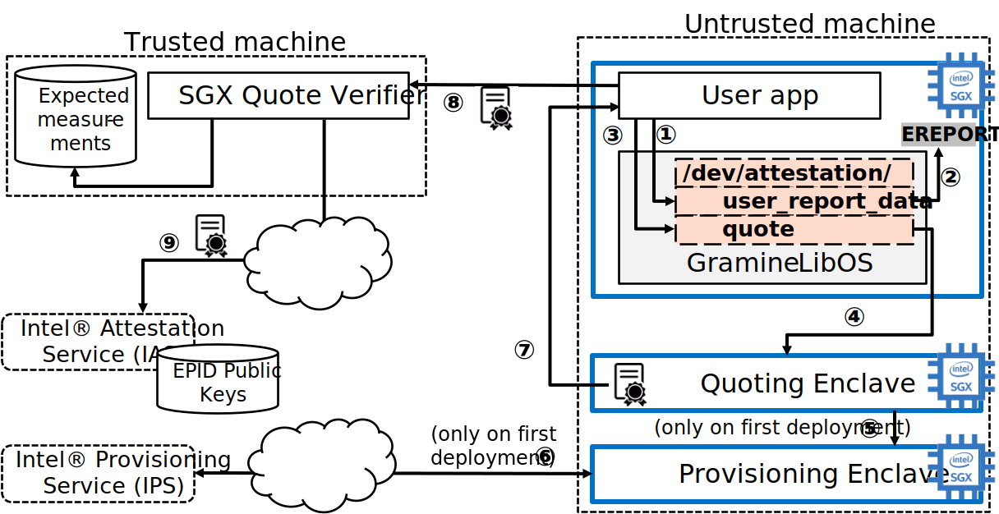
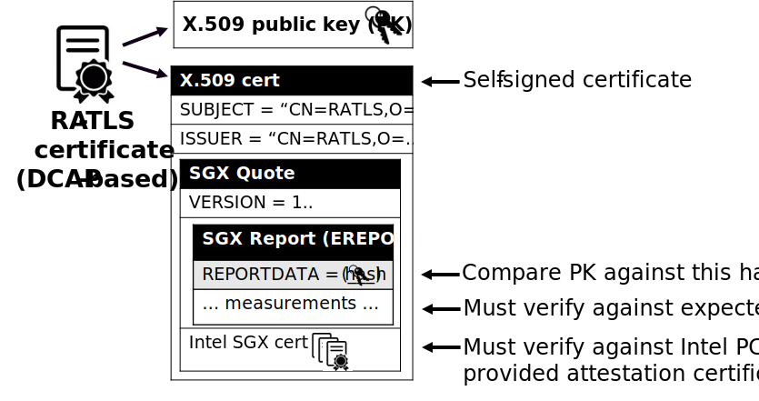
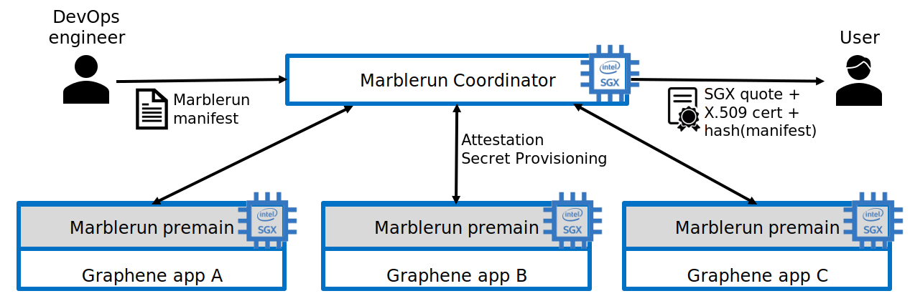

Attestation and Secret Provisioning¶
Gramine is typically used to create and run Trusted Execution Environments (TEE). A very important aspect of a TEE is Attestation. Broadly speaking, attestation is a mechanism for a remote user to verify that the application runs on a real hardware in an up-to-date TEE with the expected initial state.
There are two types of attestation: Local Attestation and Remote Attestation. Local attestation is used when two TEEs run on the same physical machine and remote attestation is used when a user attests a TEE running on a remote physical machine. In the following, even though Gramine attestation flows are designed to be TEE-agnostic, we discuss only SGX attestation flows (the SGX flows are currently the only ones implemented).
By itself, remote attestation only provides the assurance to the user that the remotely executing TEE is trusted, that the correct code is executed and that the data is processed securely. In addition to this assurance, the user needs to create a Secure Channel for trusted communication with the remote TEE. In many cases, the user also wants Secret Provisioning to transparently provision secret keys and other sensitive data to the remote TEE.
Gramine provides support for all three levels of attestation flows:
- Local Attestation and Remote Attestation are exposed to the
application via
/dev/attestationpseudo-filesystem. SGX local attestation in Gramine relies on theEREPORThardware instruction. SGX remote attestation uses the Intel SGX PSW’s AESM service and the Intel IAS service (for EPID flows) or DCAP libraries (for ECDSA/DCAP flows) under the hood. - Secure Channel is constructed using the RA-TLS libraries.
RA-TLS uses raw
/dev/attestationpseudo-files under the hood. - Secret Provisioning is built using the Secret Provisioning libraries. These libraries use RA-TLS under the hood.
Applications running under Gramine can use each of the above three levels to build their attestation flows. Each next level builds on the previous one and exposes a simpler API to the application (but also is more restricted in its functionality).
In addition to these three Gramine-native flows, there is also an option to use third-party attestation & secret provisioning solutions. This option may be better suited for complex deployments, for example, deploying chained micro-services in the public cloud. Please refer to Third-Party Solutions for specific examples.
Remote Attestation flows for EPID and DCAP¶
Remote attestation in Intel SGX comes in two flavours: EPID and DCAP. The former is used in client machines whereas the latter is used in data center environments. The details of these flows will be described in the following sections. Here we give a high-level description of both of these remote attestation schemes.
{kind=link}
The diagram above shows EPID based remote attestation. The user application runs in an SGX enclave on a remote untusted machine, whereas the end user waits for the attestation evidence from this enclave on a trusted machine.
EPID based remote attestation starts with the enclavized user application
opening the special file /dev/attestation/user_report_data for write (step
1). Under the hood, Gramine uses the EREPORT hardware instruction to
generate an SGX Report (step 2). After the SGX report is generated, the
application opens another special file /dev/attestation/quote for read (step
3). Under the hood, Gramine communicates with the Quoting Enclave to
receive the SGX Quote (step 4). In turn, the Quoting Enclave uses the
EPID key provided by the Provisioning Enclave (step 5, only during
initial deployment of this SGX machine). The Provisioning Enclave requests the
EPID key associated with this SGX machine from the internet-accessible
Intel Provisioning Service (step 6, only during initial deployment).
The Quoting Enclave generates the SGX quote from the provided-by-application SGX
report and sends it back to the enclavized user application. The application
stores this SGX quote in its enclave memory and can later send it to the remote
user (verifier) upon request. When the remote user wants to validate the SGX
enclave, it requests remote attestation with it, and the enclavized application
forwards the SGX quote to the remote trusted machine (step 8). Finally, the
remote user consults the Intel Attestation Service (by forwarding the
SGX quote to this service), which returns back whether this SGX quote can be
trusted (step 9). Finally, the remote user also verifies the enclave
measurements embedded in the SGX quote against the expected ones. After this
verification procedure, the remote user can trust the SGX enclave on the
untrusted machine and start sending inputs/receiving enclave outputs.
{kind=link}
The diagram above shows DCAP based remote attestation. The DCAP flows are very similar to EPID flows, but rather than using the EPID keys and consulting the Intel Attestation Service, the DCAP flows instead use the classic PKI with X.509 certificate chains.
The DCAP flows are the same as EPID flows in steps 1-4. However, the Quoting Enclave talks to the Provisioning Certification Enclave (PCE) rather than the Provisioning Enclave (step 5). The PCE uses another Intel service called Intel Provisioning Certification Service (PCS) to obtain the attestation collateral: attestation certificates and certificate revocation lists for the SGX machine (step 6). Also, the end user does not need to consult a web service from Intel each time a new SGX quote arrives – instead the end user periodically fetches the DCAP attestation certificates and caches them on a local machine (preliminary step 0). When the SGX quote arrives, the user compares the certificates embedded in the quote against these cached certificates (step 9).
Low-level /dev/attestation interface¶
The first level of the /dev/attestation pseudo-filesystem exposes the
low-level abstractions of attestation report and attestation quote objects
(SGX Report and SGX Quote in SGX parlance), in the form of the
below pseudo-files:
/dev/attestation/attestation_typepseudo-file can be opened for read and contains the name of the attestation scheme used (currently one ofnone,epidanddcap)./dev/attestation/user_report_datapseudo-file can be opened for read or write access. Typically, it is opened and written into before opening and reading from the/dev/attestation/reportand/dev/attestation/quotefiles, such that they can use the user-provided report data. In case of Intel SGX, user report data can be an arbitrary string of size 64B; this string is embedded in the SGX report/quote./dev/attestation/target_infopseudo-file can be opened for read and write. Typically, it is opened and written into before opening and reading from the/dev/attestation/reportfile, such that the latter can use the provided target info. In case of Intel SGX, target info is an opaque blob of size 512B./dev/attestation/my_target_infopseudo-file can be opened for read and will contain the target info of this enclave. The resulting target info blob can be passed to another enclave as part of the local attestation flow. In case of Intel SGX, target info is an opaque blob of size 512B./dev/attestation/reportpseudo-file can be opened for read and will contain the SGX report. Before opening this file for read, user report data must be written into/dev/attestation/user_report_dataand target info must be written into/dev/attestation/target_info. Otherwise the obtained report will contain incorrect or stale user report data and target info./dev/attestation/quotepseudo-file can be opened for read and will contain the SGX quote. Before opening this file for read, user report data must be written into/dev/attestation/user_report_data. Otherwise the obtained attestation quote will contain incorrect or stale user report data.
The resulting report can be passed to another TEE as part of the local
attestation flow. In case of Intel SGX, the obtained report is the SGX report
created by the EREPORT hardware instruction.
The resulting quote can be passed to another TEE or service as part of the remote attestation flow. In case of Intel SGX, the obtained quote is the SGX quote created by the Quoting Enclave (accessed via the AESM service).
Using the above files, the user application may construct arbitrary attestation
flows. Typically, the application will write a secure hash of the unique public
key generated by the TEE instance into /dev/attestation/user_report_data,
such that when the remote user receives the SGX quote (with user report data
embedded), the remote user can tie the TEE instance to the TEE’s public key.
Please note that these files are process-local, so there is no need to add locking between processes when setting the user report data/target info or reading the report/quote.
An example of this low-level interface can be found under
libos/test/regression/attestation.c. Here is a C code snippet of how the
remote attestation flow may look like in your application:
sgx_report_data_t user_report_data = {0};
memcpy(&user_report_data, "some-dummy-data", sizeof("some-dummy-data"));
int fd1 = open("/dev/attestation/user_report_data", O_WRONLY);
write(fd1, &user_report_data, sizeof(user_report_data));
uint8_t quote[SGX_QUOTE_MAX_SIZE];
int fd2 = open("/dev/attestation/quote", O_RDONLY);
read(fd2, "e, sizeof(quote));
/* ...send `quote` to the remote user for verification... */
The remote user should receive this attestation quote and verify it. In case of Intel SGX, this verification flow depends on whether the SGX remote attestation is EPID based or DCAP/ECDSA based:
- EPID based quote verification is done with the help of the Intel Attestation Service (IAS). In particular, the remote user should forward the received SGX quote to the well-known IAS endpoint via a secure internet connection and get the IAS attestation report (not to be confused with SGX report!) back. The user then should examine the contents of the IAS attestation report and decide whether to trust the remote SGX enclave or not.
- DCAP based quote verification is done with the help of the Intel DCAP libraries. These libraries encapsulate the complicated DCAP flows (extracting Intel SGX certificates from the Intel Provisioning Certification Service, caching these certificates in the Provisioning Certificate Caching Service, etc.).
Gramine does not provide any pseudo-files under /dev/attestation for
verification of the attestation quote. Instead, the remote user is encouraged to
use the quote_dump, ias_request and
verify_ias_report tools shipped together with Gramine (for
EPID based quote verification) or to use the Intel DCAP libraries and tools (for
DCAP based quote verification).
The /dev/attestation pseudo-filesystem also exposes pseudo-files to set the
encryption keys (see also Manifest syntax):
/dev/attestation/keys/<key_name>file contains the encryption key with a given name (the default key name isdefault). Typically, it is opened before the actual application runs and filled with a 128-bit key obtained from a remote secret provisioning service. The format of the file is a 16-byte raw binary value.
Mid-level RA-TLS interface¶
As can be seen from the previous section, the low-level /dev/attestation
interface provides only bare-bones TEE attestation functionality and does not
provide any convenient interface for user-side quote verification. Also, that
low-level interface provides no means to transfer any data to/from the TEE other
than the attestation quote itself.
RA-TLS interface hides the complexity of the low-level
/dev/attestation flows and provides a simple and powerful abstraction of a
TLS connection between the TEE and the remote user (enhanced with
remote-attestation flows). Using RA-TLS, the application can securely send and
receive arbitrary data to/from the remote user. RA-TLS is currently tied to
Intel SGX but can be adapted for other TEEs.
RA-TLS integrates Intel SGX remote attestation into the TLS connection setup. Conceptually, it extends the standard X.509 certificate with SGX-related information (SGX quote). The additional information allows the remote user (verifier) of the certificate to verify that it is indeed communicating with an SGX enclave (attester).
{kind=link}
The diagram above shows the standard X.509 certificate generated by RA-TLS (the diagram shows the DCAP based RA-TLS certificate, but the EPID based RA-TLS certificate is conceptually similar). This certificate is self-signed because the actual chain of trust is stored in the Intel SGX certificates embedded in the SGX quote. The most important concept behind the RA-TLS certificate is that it embeds the SGX quote (in one of the unused X.509 extension fields), which in turn embeds the SGX report and the complete Intel SGX certificate chain. Therefore, the RA-TLS certificate contains all the SGX-relevant information. Also, notice how the SGX report’s REPORTDATA field contains the secure hash of the ephemeral public key generated by the enclavized application – this is how this RA-TLS certificate is tied to the enclavized application that generated it.
RA-TLS is shipped as three libraries: ra_tls_attest.so, EPID based
ra_tls_verify_epid.so and DCAP/ECDSA based ra_tls_verify_dcap.so.
The interfaces exposed by these libraries can be found in the following header:
tools/sgx/ra-tls/ra_tls.h.
The examples of using RA-TLS can be found under CI-Examples/ra-tls-mbedtls.
ra_tls_attest.so¶
This library creates the self-signed RA-TLS certificate. This library must be
loaded into the SGX enclave. The library relies on the pseudo-FS
/dev/attestation to retrieve the SGX quote and embed it into the RA-TLS
certificate. The library is not thread-safe.
The library expects the following information in the manifest for EPID based attestation:
sgx.remote_attestation = "epid"– EPID remote attestation is enabled.sgx.ra_client_spid– client SPID for EPID remote attestation.sgx.ra_client_linkable– client linkable/unlinkable attestation mode.
For DCAP/ECDSA based attestation, the library expects instead:
sgx.remote_attestation = "dcap"– DCAP remote attestation is enabled.
The library uses the following environment variables if available:
RA_TLS_CERT_TIMESTAMP_NOT_BEFORE– the generated RA-TLS certificate uses this timestamp-not-before value, in the format “20010101000000” (this is also the default value if environment variable is not available).RA_TLS_CERT_TIMESTAMP_NOT_AFTER– the generated RA-TLS certificate uses this timestamp-not-after value, in the format “20301231235959” (this is also the default value if environment variable is not available).
ra_tls_verify_epid.so¶
This library contains the verification callback that should be registered with the TLS library during verification of the TLS certificate. It verifies the RA-TLS certificate and the SGX quote by sending it to the Intel Attestation Service (IAS) and retrieving the attestation report from IAS. This library is not thread-safe.
The library uses the following SGX-specific environment variables, representing SGX measurements:
RA_TLS_MRSIGNER– verify that the attesting enclave has thisMRSIGNER. This is a hex string.RA_TLS_MRENCLAVE– verify that the attesting enclave has thisMRENCLAVE. This is a hex string.RA_TLS_ISV_PROD_ID– verify that the attesting enclave has thisISV_PROD_ID. This is a decimal string.RA_TLS_ISV_SVN– verify that the attesting enclave has this or higherISV_SVN. This is a decimal string.
For each of these settings, you may specify the special value any to skip
verifying a particular measurement. This used to be the default, which would
be used if a particular environment variable wasn’t present. This behavior
has been deprecated and will become a hard error in the future.
The four SGX measurements above may be also verified via a user-specified
callback with the signature int (*callback)(char* mrenclave, char* mrsigner,
char* isv_prod_id, char* isv_svn). This callback must be registered via
ra_tls_set_measurement_callback(). The measurements from the received SGX
quote are passed as four arguments. It is up to the user to implement the
correct verification of SGX measurements in this callback (e.g., by comparing
against expected values stored in a central database).
The library also uses the following SGX-specific environment variables:
RA_TLS_ALLOW_OUTDATED_TCB_INSECURE(optional) – whether to allow outdated TCB as returned in the IAS attestation report or returned by the DCAP verification library. Value1means “allow outdated TCB”. Note that allowing outdated TCB is insecure and should be used only for debugging and testing. Outdated TCB is not allowed by default.RA_TLS_ALLOW_DEBUG_ENCLAVE_INSECURE(optional) – whether to allow debug enclaves (enclaves withSECS.ATTRIBUTES.DEBUGbit set to one). Value1means “allow debug enclaves”. Note that allowing debug enclaves is insecure and should be used only for debugging and testing. Debug enclaves are not allowed by default.
The library uses the following EPID-specific environment variables if available:
RA_TLS_EPID_API_KEY(mandatory) – client API key for EPID remote attestation.RA_TLS_IAS_REPORT_URL(optional) – URL for IAS “verify attestation evidence” API endpoint. If not specified, the default hard-coded URL for IAS is used.RA_TLS_IAS_SIGRL_URL(optional) – URL for IAS “Retrieve SigRL” API endpoint. If not specified, the default hard-coded URL for IAS is used.RA_TLS_IAS_PUB_KEY_PEM(optional) – public key of IAS. If not specified, the default hard-coded public key is used.
ra_tls_verify_dcap.so¶
Similarly to ra_tls_verify_epid.so, this library contains the verification
callback that should be registered with the TLS library during verification of
the TLS certificate. Verifies the RA-TLS certificate and the SGX quote by
forwarding it to DCAP verification library (libsgx_dcap_quoteverify.so) and
checking the result. This library is not thread-safe.
The library uses the same SGX-specific environment variables as
ra_tls_verify_epid.so and ignores the EPID-specific environment variables.
Similarly to the EPID version, instead of using environment variables, the four
SGX measurements may be verified via a user-specified callback registered via
ra_tls_set_measurement_callback().
The library expects all the DCAP infrastructure to be installed and working correctly on the host.
High-level Secret Provisioning interface¶
In some cases, the mid-level interface of RA-TLS is an overkill. Sometimes all the TEE application needs is a couple secrets provisioning into it and nothing more. E.g., an image recognition application may only need a single encryption key to decrypt the inputs (model file, classification file, image file) and the same key to encrypt the outputs. Such an application doesn’t need a TLS communication with the remote user but simply a way to securely obtain this single key from a well-known location.
This is the scenario where the high-level Secret Provisioning interface comes into play. Secret Provisioning is shipped together with Gramine in the form of (helper) shared libraries. These libraries are reference implementations for the flows to provision secrets from a trusted machine (service, verifier) to an enclavized application (client, attester). These libraries rely heavily on RA-TLS and re-use the same configuration parameters as listed in the previous section.
Secret Provisioning libraries hide the complexity of RA-TLS but use it under the hood for communication between the enclavized application and the trusted service. Conceptually, an enclavized client application and a trusted service establish a secure RA-TLS communication channel via TLS mutual attestation. The service sends its normal X.509 certificate for verification by client, whereas the enclavized client sends its RA-TLS X.509 certificate with the SGX quote for verification by the service. After this mutual attestation, the trust is established, and the service provisions the secrets to the enclavized client. The established TLS channel may be either closed after provisioning these initial secrets or may be further used by both parties for continued secure communication.
Secret Provisioning is shipped as three libraries: secret_prov_attest.so,
EPID based secret_prov_verify_epid.so and DCAP/ECDSA based
secret_prov_verify_dcap.so.
The examples of using RA-TLS can be found under CI-Examples/ra-tls-secret-prov.
The examples include minimalistic provisioning of constant-string secrets as
well as provisioning of an encryption key and its later use for encrypted files.
secret_prov_attest.so¶
This library is typically linked into enclavized applications. The application
calls into this library to initiate the RA-TLS session with the remote trusted
service for secret provisioning. Alternatively, the library runs before
application’s entry point, initializes the RA-TLS session, receives the secret
and stashes it in an environment variable SECRET_PROVISION_SECRET_STRING.
In both cases, the application may call into the library to continue secure
communication with the trusted party and/or to retrieve the secret. This
library is not thread-safe.
The library expects the same configuration information in the manifest and environment variables as RA-TLS. In addition, the library uses the following environment variables if available:
SECRET_PROVISION_CONSTRUCTOR(optional) – set it to1/true/TRUEto initialize the RA-TLS session and retrieve the secret before the application starts. By default, it is not set, thus secret provisioning must be explicitly requested by the application.SECRET_PROVISION_SET_KEY(optional) – set it to the name of the key that will be provisioned into the Gramine enclave as the secret. For example, setting this environment variable todefaultwill install the provisioned key as the default encryption key for encrypted files. The key must be sent (by the secret provisioning service) as 16-bytes-long AES-GCM encryption key. This environment variable is checked only ifSECRET_PROVISION_CONSTRUCTORis set. The library puts the provisioned key into/dev/attestation/keys/<key_name>so that Gramine recognizes it.
Note
Previously, SECRET_PROVISION_SET_PF_KEY = 1/true/TRUE was used for
setting the default encryption key, and Gramine still supports that
environment variable for backward compatibility. It is deprecated and will be
removed in the next releases of Gramine.
SECRET_PROVISION_SERVERS(optional) – a comma, semicolon or space separated list of server names with ports to connect to for secret provisioning. Example:localhost:4433;trusted-server:443. If not set, defaults tolocalhost:4433. Alternatively, the application can specify it as an argument ofsecret_provision_start().SECRET_PROVISION_CA_CHAIN_PATH(required) – a path to the CA chain of certificates to verify the server. Alternatively, the application can specify it as an argument ofsecret_provision_start().
The secret may be retrieved by the application in two ways:
- Reading
SECRET_PROVISION_SECRET_STRINGenvironment variable. It is updated only ifSECRET_PROVISION_CONSTRUCTORis set to true, ifSECRET_PROVISION_SET_KEYis not set, and if the secret is representable as a string of maximum 4K characters. - Calling
secret_provision_get()function. It always updates its pointer argument to the secret (orNULLif secret provisioning failed).
Warning
Provisioned secrets must be treated with utmost care, otherwise they could be
inadvertently leaked. For example, if a provisioned secret is a
base64-encoded encryption key, then the user should decode it from base64
into binary using side-channel-resistant functions (e.g.,
mbedtls_base64_decode()) instead of non-crypto-secure functions (e.g.,
self-written decoding logic or a standard library function).
secret_prov_verify_epid.so¶
This library is typically linked into a normal, non-enclavized application (secret provisioning service). The service calls into this library to listen for clients in an endless loop. When a new client connects, the service initiates an RA-TLS session with the client, verifies the RA-TLS X.509 certificate of the client, and provisions the secret to the client if verification is successful. The service can register a callback to continue secure communication with the client (instead of simply closing the session after the first secret is sent to the client). This library is not thread-safe. This library uses EPID based RA-TLS flows underneath.
The library expects the same configuration information in the manifest and environment variables as RA-TLS.
secret_prov_verify_dcap.so¶
Similarly to secret_prov_verify_epid.so, this library is used in
secret-provisioning services. The only difference is that this library uses
DCAP based RA-TLS flows underneath.
The library uses the same SGX-specific environment variables as
secret_prov_verify_epid.so and ignores the EPID-specific environment
variables. The library expects all the DCAP infrastructure to be installed and
working correctly on the host.
Third-Party Solutions¶
The three Gramine-native interfaces described above are quite limited in their functionality. For example, RA-TLS currently creates only self-signed X.509 certificates that may not fit well in traditional Public Key Infrastructure (PKI) flows. As another example, our Secret Provisioning service is only a minimal reference implementation: it is not scalable, it cannot verify multiple different enclaves, it doesn’t allow flexible attestation rules, etc.
Therefore, a more fully-fledged, centralized attestation & secret provisioning solution may be required. This is especially true in cloud deployments: in the cloud, it makes sense to have a single service that manages remote attestation and secret provisioning. The end users do not perform attestation of separate enclaves but only perform attestation and verification of this single service. This service itself runs in the SGX enclave, and is bootstrapped with a policy file that contains all the secure measurements and policies for each of the participating SGX applications.
Fortunately, there are several such solutions that integrate with Gramine. We describe one of them below, and we will add more solutions in the future.
Edgeless Marblerun¶
{kind=link}
Marblerun is the service mesh for confidential computing from Edgeless Systems. Marblerun consists of two parts: the Coordinator (the centralized attestation & secret provisioning service) and the Marbles (separate Gramine applications). The Coordinator needs to be deployed once in the cluster and the Marble component needs to be integrated with each Gramine application. Marblerun Coordinator is configured with a simple JSON document (the manifest). It specifies the topology of the cluster, the infrastructure properties, and provides configuration parameters for each Gramine application.
Marblerun integrates with Gramine using the “premain” trick. In essence, instead of starting the Gramine application directly, Marblerun requires modifications to the Gramine manifest file to start its “premain” executable first. This “premain” executable attests itself to the Coordinator, receives secrets from the Coordinator, patches command-line arguments, environment variables and files with these secrets, and only then starts the main Gramine application. This “premain” executable together with the Gramine application is referred to as a Marble. For more details, see Marblerun docs on Gramine integration.
The Coordinator serves as a centralized service for remote attestation of Marbles and provisioning of secrets to them. The Coordinator verifies the identity and integrity of each newly spawned Marble before admitting it to the trusted cluster. Each Marble tries to register itself with the Coordinator by sending an activation request to it. This request contains the SGX quote, which allows the Coordinator to verify that the Marble (and thus the Gramine application) adheres to the Marblerun manifest in effect.
End users do not perform remote attestation on each Gramine application but instead they only attest the Coordinator. After attesting the Coordinator and verifying its manifest, the end user gains trust in the whole cluster. Afterwards, the end user can establish conventional TLS connections to individual Gramine applications in the cluster and use them as normal. The Coordinator acts as a Certificate Authority (CA) for these connections.
For more information, refer to official Marblerun resources: